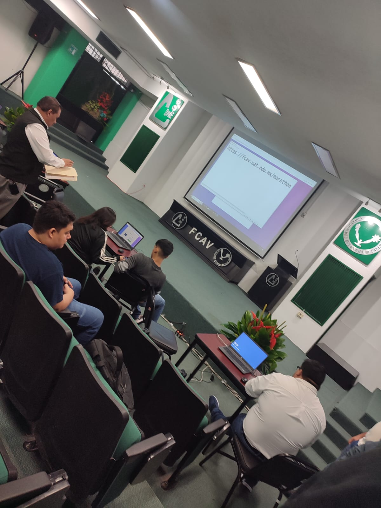
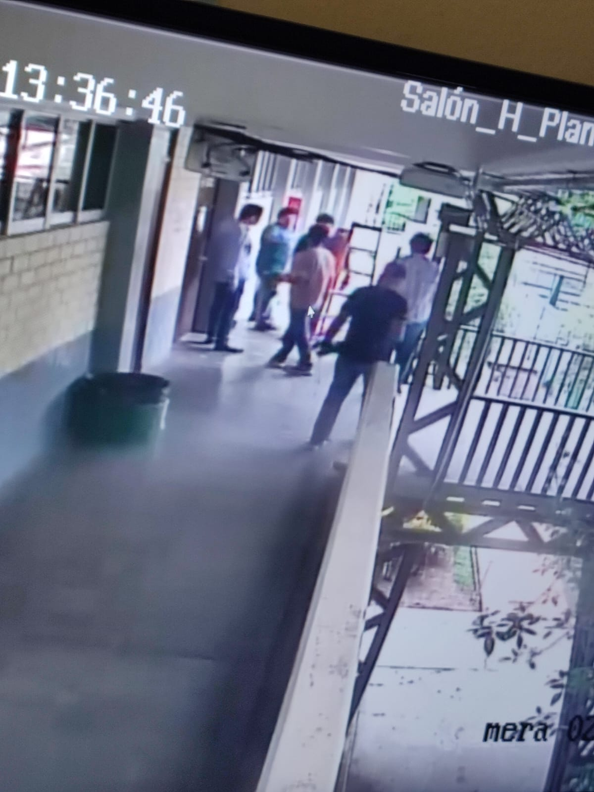
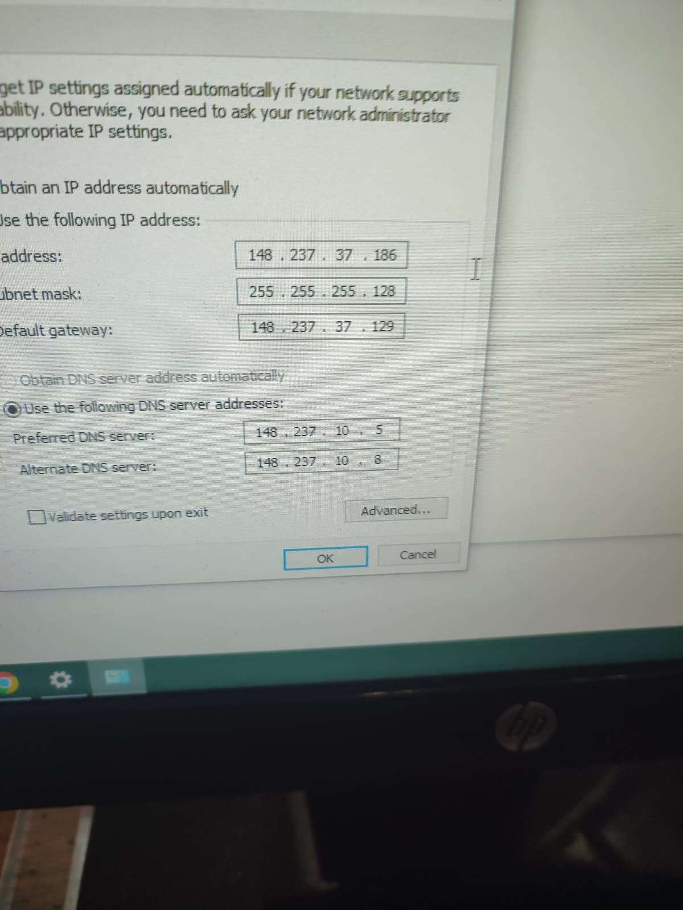
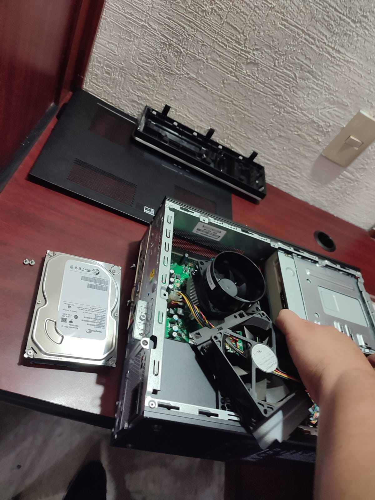
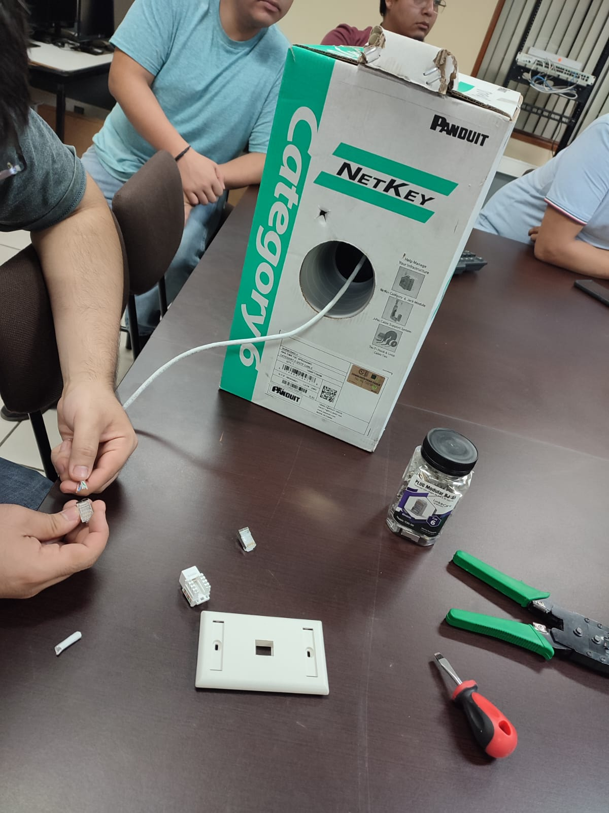
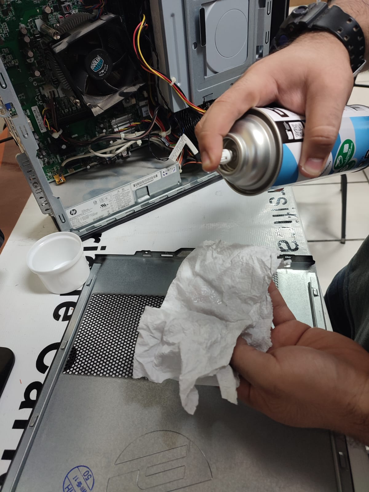
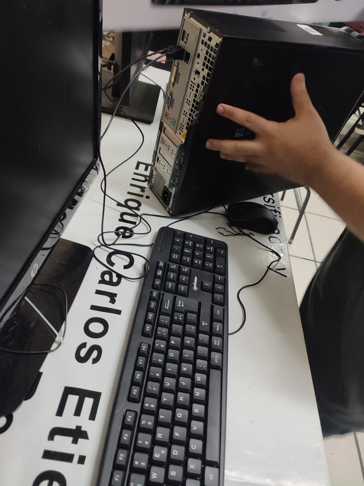
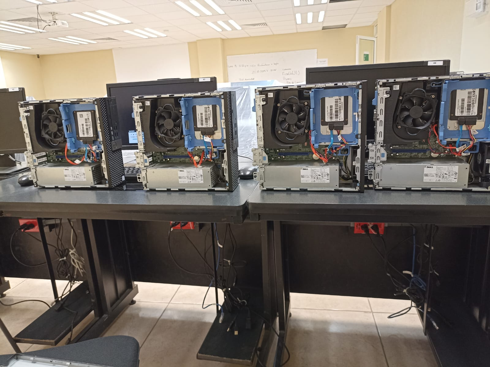
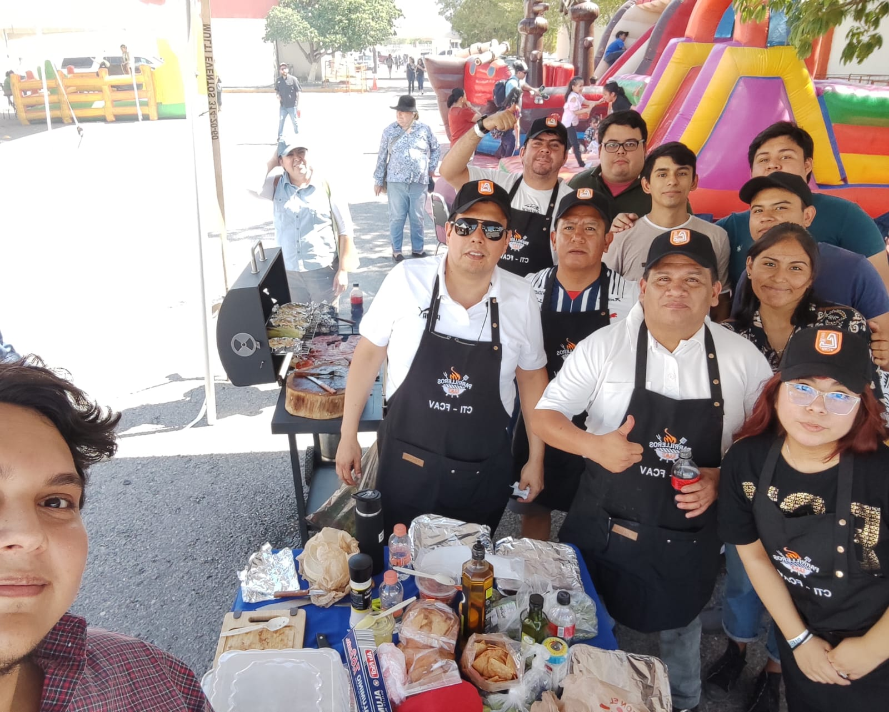

Mi Currículum
Jazmín Elizabeth Mota Gonzalez

Datos Generales:
Nombre: Jazmín Elizabeth Mota Gonzalez
Edad: 20 años
Fecha de Nacimiento: 21/10/03
Correo Electrónico: jazminmota521@gmail.com
Telefono: 834-299-21-52
Formación:
Estudié en el Jardín De Niños Decroly durante 3 años.
Posteriormente, en la Escuela Primaria Jose Vasconcelos por 6 años.
Luego, en la Secundaria General N-7 durante 3 años.
Después, en el CBTIS 119 por 3 años.
Actualmente, estoy estudiando en la Universidad Autónoma de Tamaulipas en la Facultad de Comercio y Administración Victoria en la carrera de Tecnologías de la Información (LTI).
Hobbies:
Me gusta jugar videojuegos en mi Xbox como Fortnite, Rocket League, Grounded, My Hero Academia, Minecraft, etc.
También me gusta jugar en mi celular juegos como FreeFire, Homescape, KOF ALLSTAR, Smash Legends, Minecraft, entre otros.
Disfruto estudiar y esforzarme para obtener buenas calificaciones.
Actualmente me gusta mucho ver doramas (series coreanas).
Además, me gusta dibujar, pintar, hacer manualidades.
Pasear con mi familia los fines de semana es algo que disfruto mucho.
Contactos:
Nombre: Jazmin Elizabeth Mota Gonzalez
Teléfono: 834-299-21-52
Correo: jazminmota521@gmail.com
Dirección: Col. Ampl. Lopez Mateos.
Tutor:
Nombre: Hector Manuel Mota Maldonado
Teléfono: 834-162-86-36
Experiencia Laboral:
Apoyo y hago mi servicio en el área de CTI con el Dr. Santos y Dr. Demian en el área administrativa, de soporte y mantenimiento en el equipo de cómputo y en proceso de aprendizaje de páginas web.
        Portafolio
Links para visualizar los ejercicios